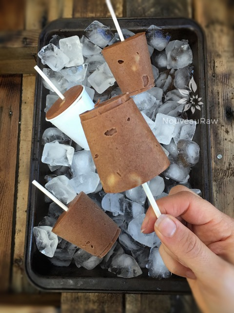

Chocolate Malt Banana Chunk Ice Cream
~ raw, vegan, gluten-free ~
Ice cream is usually pegged as a summer treat, but after living in Alaska for 28 years, I learned that ice cream is meant to be enjoyed year-round! :) I love to play around with ice cream bases, whether they are nut-based, coconut meat-based, milk-based…. each one gives the ice cream a different texture.
This time around I decided to try coconut butter since it can be much easier to locate than Young Thai Coconuts. The result… very very thick and creamy ice cream. You can easily cut this recipe in half if you wanted to but is there anything wrong with having a little extra on hand?! I for one find it to be a crime to have less than more. :)
I grew up enjoying malts… not shakes, malts! I remember us buying tall jars of malt powder and adding EXTRA scoops to my shakes. There was never such a thing as too much malt. But those days are looong gone. Well, for “malt” anyway. Today there is a new “malt” in town… MACA! Maca is the new malt.
Before I get into the specifics wonders of maca, I want to back up and share with you what malt is commonly made from.
Malt flavoring is an extract, most commonly from the grain barley, but may be made from other grains. It is made by germinating the barley grains by soaking them in water, then heating them to stop the germination, so the plant doesn’t grow. The germination causes the starch in the grains to turn to sugar, with the result being an extract that has many uses.
Malt is used in the brewing of beer as food for the yeast, as well as a flavoring that is found in many foods. Malt contains gluten, which is a complex of proteins found in the grain, so it’s not safe for people with Celiac disease or other gluten sensitivity. It’s amazing how gluten has a way of sneaking into foods.
Maca root tastes just like malt flavoring to me and is known to have amazing health benefits. Let me list just a few. If you are intrigued by this, I suggest you do more research on it. You will soon be adding it to your diet! It is known to balance moods, strengthens the skin, increases energy, increases libido and fertility, helps with sleep, reduces symptoms of PMS and menopause, strengthens hair, and reduces hair loss. I am going to stop there so we can get busy making ice cream. But I just had to share what our secret ingredient was in this recipe. Enjoy!
Ingredients:
Yields 7 cups batter
Preparation:
- In a high-powered blender combine the almond milk, coconut butter, dates, cacao powder, maca, maple syrup, vanilla, stevia, and salt. Blend until creamy. This makes 7 cups worth of batter so make sure your blender craft is large enough. You can cut the recipe in half if you need to.
- Place the blender craft in the freezer for 1 hour.
- Add the diced banana to the ice cream mix and stir together.
- Pour the batter into the ice cream machine and follow the manufacturer instructions.
- If you don’t have an ice-cream machine, pour the batter into a glass dish, cover, and place it in the freezer. Give the ice cream a stir about every 30 minutes until firm.
- To serve, allow the ice cream to soften at room temperature for about 15 minutes.
Freezing Suggestions for Ice Cream:
-
Use an ice cream machine. Follow the manufactures directions.
-
Freeze in popsicle molds or 3 oz Dixie cups with a popsicle stick inserted.
-
-
Store the ice cream in the very back of the freezer, as far away from the door as possible. Every time you open your freezer door you let in warm air. Keeping ice cream way in the back and storing it beneath other frozen-sold items will help protect it from those steamy incursions.
-
Ice cream is full of fat, and even when frozen, fat has a way of soaking up flavors from the air around it—including those in your freezer. To keep your ice cream from taking on the odors, use a container with a tight-fitting lid. For extra security, place a layer of plastic wrap between your ice cream and the lid.
-
To soften in the refrigerator, transfer ice cream from the freezer to the refrigerator 20-30 minutes before using. Or let it stand at room temperature for 10-15 minutes.
-
Wish to make your own raw ice cream, wonder what machine I might recommend, and more? Click (
here) to check out the Reference Library!

Another option is to create Dixie Pops with the ice cream batter. Perfect for portion control and young ones.
© AmieSue.com